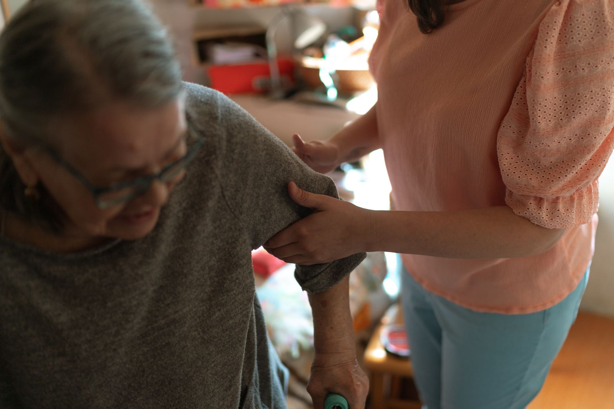
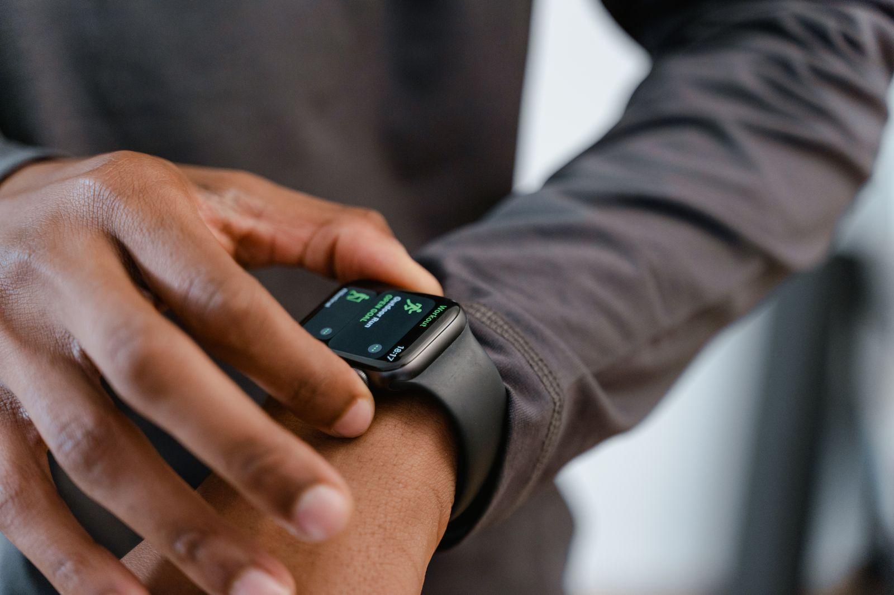

Rostro, brazos y habla
Exploración multimodal de ejercicios FAST guiados: asimetrías faciales, elevación de brazos y características del habla. El rendimiento clínico de NeuroFAST aún no está establecido.
Prototipo e investigaciónNeuroFAST explora cómo el método FAST, la inteligencia artificial y la salud conectada pueden ayudar a organizar los primeros pasos frente a señales de alerta de un ACV.

Reconocer señales, recordar cuándo comenzaron y explicar antecedentes relevantes puede ser difícil bajo presión. NeuroFAST nace para investigar cómo ordenar ese momento, sin prometer un diagnóstico.
La oportunidad no está solo en reconocer una señal, sino en ayudar a que la información llegue con claridad.
El producto se plantea como apoyo para pacientes, cuidadores y equipos de atención. Toda capacidad clínica deberá evaluarse formalmente antes de presentarse como efectiva.
En una situación urgente, la tecnología debe sentirse clara y cercana. La propuesta organiza lo que una persona observa, recuerda y necesita comunicar, sin reemplazar su criterio ni la atención profesional.
Exploración multimodal de ejercicios FAST guiados: asimetrías faciales, elevación de brazos y características del habla. El rendimiento clínico de NeuroFAST aún no está establecido.
Prototipo e investigaciónRegistro de la hora observada de inicio o de la última vez que la persona estuvo bien, junto con antecedentes aportados por el usuario.
Comunicación contextualAvisos a contactos previamente autorizados, pensados para acompañar sin retrasar la atención de urgencia.
Hoja de rutaDocumento legible con tiempos, síntomas y antecedentes registrados por la persona o su cuidador.
Concepto de productoRegistros de hábitos, presión arterial, pulso y posibles dispositivos compatibles para conversaciones de salud más informadas.
Investigación futuraExplora el recorrido propuesto. La demostración es ilustrativa: no activa cámara, micrófono, sensores ni realiza evaluaciones médicas.
Una guía breve presenta los elementos de FAST en lenguaje directo para apoyar la observación inicial, siempre priorizando la llamada a urgencias.
Demostración visual: no crea un informe clínico ni utiliza datos personales.
Interfaz conceptual · Sin diagnósticoLa visión de NeuroFAST va más allá del momento de alerta: considera información personal útil para futuras conversaciones con profesionales, sin convertir un registro doméstico en diagnóstico.
Una experiencia de seguimiento podría reunir hábitos, antecedentes y mediciones aportadas por la persona. Los valores que se muestran aquí son ficticios y solo ilustran la interfaz.

La literatura explica la urgencia y muestra tecnologías comparables; no valida clínicamente NeuroFAST. Por eso distinguimos evidencia publicada, prototipo y hoja de ruta.
224 de 295 personas con ACV confirmado, trasladadas en ambulancia a dos hospitales de Noruega entre junio de 2018 y mayo de 2019. No es la sensibilidad de NeuroFAST.
Journal of Emergency Medicine · publicado en 2026 ↗Mediana desde la salida de la escena hasta el hospital, con y sin signos FAST documentados. Asociación observacional; no demuestra causalidad.
Noruega · datos 2018–2019 · publicación 2026 ↗Guía AHA/ASA 2026 para pacientes elegibles con ACV isquémico; algunos casos seleccionados pueden evaluarse en ventanas extendidas mediante imágenes avanzadas.
Guía clínica AHA/ASA · 2026 ↗Estimación GBD para 2021 (UI 95%: 147,8–171,6 M). Son años de vida saludable perdidos, no pacientes ni un dato específico de Chile.
The Lancet Neurology · publicado en 2024 ↗Cómo leer estos datos: el 24,1% restante de la cohorte no tuvo signos FAST documentados. Esto no convierte otras mediciones en métodos de detección ni permite atribuir a una aplicación una efectividad del 75,9%. Ante síntomas sospechosos, debe solicitarse ayuda urgente.
NeuroFAST es un emprendimiento universitario chileno en fase de prototipo. Buscamos colaboración para comprender necesidades reales, evaluar usabilidad y construir evidencia antes de realizar promesas clínicas.
Solicitar presentaciónEducación comunitaria y programas para cuidadores que prioricen una respuesta responsable.
Investigación de flujos para organizar información aportada por pacientes.
Coordinación de alertas y redes autorizadas, sujeta a validación de seguridad y usabilidad.
Apoyo conceptual para protocolos de observación y comunicación de antecedentes.
Orientación, registro personal y coordinación con una red de confianza.
Proyecto nacido de una tesis de Ingeniería Civil en Computación e Informática de la Universidad Central de Chile, con foco en prototipado responsable y validación gradual.
Equipo fundador · Ingeniería Civil en Computación e Informática
Equipo fundador · Ingeniería Civil en Computación e Informática
Estamos abiertos a conversar con instituciones, especialistas, programas de innovación y organizaciones interesadas en evaluar responsablemente el proyecto.